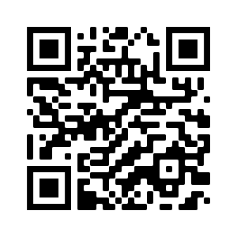

Algunas propuestas de aplicación de indicadores de idoneidad didáctica en probabilidad
Pablo Beltrán-Pellicer & Belén Giacomone
@pbeltranp @giacoss


Mayo de 2020
Seminario Hispano Brasileño de Educación Estadística. Facultad de Ciencias de la Educación. Universidad de Granada
Acceso a la presentación

Introducción y marco teórico
Idoneidad didáctica
Grado en que un proceso de instrucción reúne ciertas características que permiten calificarlo como adecuado para la adaptación entre los significados personales obtenidos por los alumnos (aprendizaje) y los significados institucionales, ya sean pretendidos o implementados (enseñanza), considerando la influencia del entorno (Godino, 2013).
Idoneidad didáctica

Fuente: Godino (2013).
Faceta epistémica
- La faceta epistémica se refiere, en términos de Breda et al., (2017) a la enseñanza de una buena matemática.
- La idoneidad epistémica se considera mayor en la medida que los contenidos pretendidos o implementados representan bien a los contenidos de referencia. Dos criterios fundamentales (Godino, 2013):
- La presencia de diversos significados del contenido correspondiente y su interconexión.
- El reconocimiento de la diversidad de objetos primarios y procesos implicados para los diversos significados.
Faceta epistémica
Las situaciones-problemas tienen un rol central en el EOS, de modo que los objetos matemáticos participan y emergen de los sistemas de prácticas matemáticas.
Se trata de dar una respuesta satisfactoria a la cuestión del significado de los objetos matemáticos
- ¿Qué es la media?
- ¿Qué es el número?
Faceta epistémica
Bajo esta perspectiva ontosemiótica, la actividad matemática se puede describir y analizar a partir de una ontología explícita de objetos (Godino et al., 2007):
- Lenguajes: en sus diversos registros y representaciones, natural, gestual, simbólico, gráfico, etc..
- Situaciones-problemas: aplicaciones intra y extra-matemáticas, ejercicios, problemas.
- Reglas:
- Conceptos-definición: conceptos introducidos mediante definiciones o descripciones, proporcionalidad, función, etc.
- Proposiciones: enunciados sobre conceptos-definición.
- Procedimientos: algoritmos, operaciones, técnicas de cálculo.
- Argumentos: enunciados usados para validar o explicar las proposiciones y procedimientos.
Criterios de idoneidad
- Para cada faceta Godino (2013) propone un sistema de criterios generales para que sean consideradas de calidad.
- Breda, Pino-Fan, & Font (2017) señalan que estos criterios de idoneidad didáctica son potentes herramientas para organizar la reflexión y evaluación de un proceso de instrucción.
- Es conveniente utilizarlos para analizar y valorar los vídeos de la muestra considerada.
- Santos (2018) propone un modelo para valorar vídeos educativos de matemáticas:
- Idoneidad didáctica (EOS).
- Lógica difusa para considerar la evaluación mediante una opinión de las comunidades de interés
- Métodos multicriterio (TOPSIS), para ordenar los datos obtenidos y tomar decisiones a partir de ellos.
Criterios generales de idoneidad epistémica
Siguiendo a Godino (2013)
Situaciones-problema
- Se presenta una muestra representativa y articulada de situaciones de contextualización, ejercitación y aplicación
- Se proponen situaciones de generación de problemas (problematización)
Lenguajes
- Uso de diferentes modos de expresión matemática, traducciones y conversiones entre ellos.
- Nivel del lenguaje adecuado a los niños a que se dirige.
- Se proponen situaciones de expresión matemática e interpretación.
Reglas (definiciones, procedimientos, propiedades)
- Las definiciones y procedimientosson claros y correctos, y estánadaptados al nivel educativo al que se dirigen.
- Se presentanlos enunciados y procedimientos fundamentales del tema para el nivel educativo dado.
- Se proponen situaciones donde los alumnos tengan que generar o negociar definiciones proposiciones o procedimientos.
Argumentos
- Las explicaciones, comprobaciones y demostraciones son adecuadas al nivel educativo a que se dirigen.
- Se promueven situaciones donde el alumno tenga que argumentar.
Relaciones
- Los objetos matemáticos (problemas, definiciones, pro- posiciones, etc.) se relacionan y conectan entre sí.
- Se identifican y articulan los diversos significados de los objetos que intervienen en las prácticas.
Propuesta y método de investigación
GVID para probabilidad
En Beltrán-Pellicer, Godino y Giacomone (2018) se obtuvo una propuesta de indicadores de idoneidad didáctica para procesos de enseñanza y aprendizaje de la probabilidad.
Los indicadores correspondientes a la faceta epistémica se muestran en la Tabla 1 de nuestra comunicación.
Aplicaciones de este tipo de indicadores
Evaluación de vídeos en línea sobre contenidos concretos
En Beltrán-Pellicer, Giacomone y Burgos (2018) aplicamos una GVID específica para repartos propocionales.
¿Por qué interesarnos en esto?
- El fenómeno de los vídeos educativos alojados en plataformas en línea no es nuevo.
- YouTube™ es aceptado por los estudiantes como medio para el aprendizaje de las matemáticas (Ramírez, 2010).
- Estos vídeos son un recurso muy utilizado en ciertas propuestas pedagógicas, como en el flipped learning (Davies, Dean, & Ball, 2013).
Es necesario que las didácticas específicas indaguen sobre el grado de adecuación de estas propuestas de enseñanza-aprendizaje, asegurando de esta forma que la tecnología esté alineada con los objetivos de aprendizaje (Turney, Robinson, Lee, & Soutar, 2009)
Los resultados del estudio sobre vídeos de repartos fueron muy interesantes:
- Presentan diversos grados de idoneidad: los vídeos más populares no tienen por qué ser los más adecuados.
- Muchos de estos vídeos presentan errores e imprecisiones.
- Diversidad de significados en torno a un mismo objeto matemático, que debe ser tenida en cuenta por los docentes.
Limitaciones
- Complejidad a la hora de cuantificar el grado de idoneidad epistémica de cada vídeo.
- La reducción a un simple número conlleva una pérdida de información.
- En este trabajo se ha calculado el grado de idoneidad de forma similar a lo realizado por otros autores (Learning Mathematics for Teaching Project, 2011).
Los valores obtenidos revelan una baja idoneidad epistémica, que concuerda con resultados de estudios similares para otros campos del conocimiento, como las ciencias experimentales y sociales (Bortoliero & León, 2017; Tan, 2013).
Aplicaciones de este tipo de trabajos
- Este tipo de análisis se puede utilizar como experiencia formativa en la formación de profesores (Burgos, Beltrán-Pellicer y Godino, 2020).
- Realizar estudios similares sobre vídeos orientados a la enseñanza de contenidos de probabilidad y estadística.
- Comparar los resultados de dichas investigaciones con los obtenidos en el ámbito de la proporcionalidad.
Conclusiones
Conclusiones
- La TID ofrece un campo activo de trabajo que puede combinarse con metodologías de formación docente y crecimiento profesional, como el estudio de clases (Hummes, Font y Breda, 2019).
- Interés en analizar vídeos educativos online sobre contenidos específicos de probabilidad y estadística.
- Es un recurso utilizado por el alumnado como refuerzo o ayuda al estudio.
- Son un elemento clave en algunas propuestas metodológicas como la clase invertida.
Estos estudios se complementarían con el diseño de experiencias con profesores en formación.
Créditos y referencias
Lista de referencias
Beltrán-Pellicer, P. y Giacomone, B. (2020). Algunas propuestas de aplicación de indicadores de idoneidad didáctica en probabilidad. En M. M. Gea. R. Álvarez-Arroyo y J.A. Garzón (Eds.), Seminario Hispano Brasileño de Educación Estadística. Granada: Grupo PAI FQM-126. Enlace
Beltrán-Pellicer, P., Giacomone, B., & Burgos, M. (2018). Online educational videos according to specific didactics: the case of mathematics / Los vídeos educativos en línea desde las didácticas específicas: el caso de las matemáticas. Cultura y Educación, 30(4), 633-662. doi: 10.1080/11356405.2018.1524651. Enlace
Créditos
Compartir el conocimiento de forma libre es una buena práctica.
En estas diapositivas se han utilizado materiales disponibles en abierto y se han citado las fuentes correspondientes. El contenido de la presentación está publicado con licencia Creative Common CC-BY-SA-4.0, lo que quiere decir que puedes compartirla y adaptarla, citándonos (Pablo Beltrán-Pellicer y Belén Giacomone) y poniendo un enlace a https://pbeltran.github.io/semhispabrasil2020.
Siéntete libre de trabajar con este material y de contactar conmigo para compartir tus reflexiones.
Presentación realizada con Reveal.js, Pandoc, MathJax y Markdown. El código fuente está disponible en https://github.com/pbeltran/semhispabrasil2020
La fuente de las imágenes es propia, salvo las que se ha citado la fuente en su diapositiva y las de dominio público obtenidas en Unsplash.